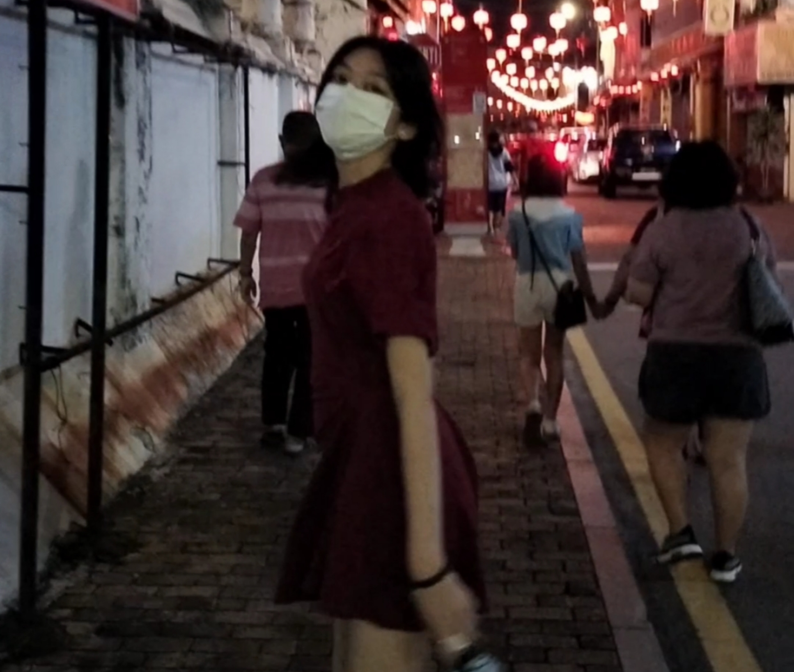
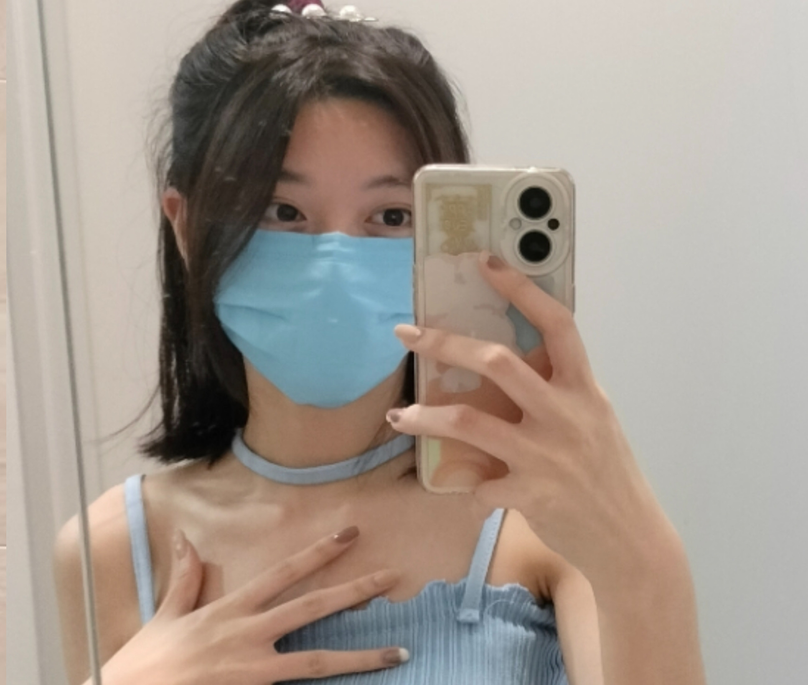
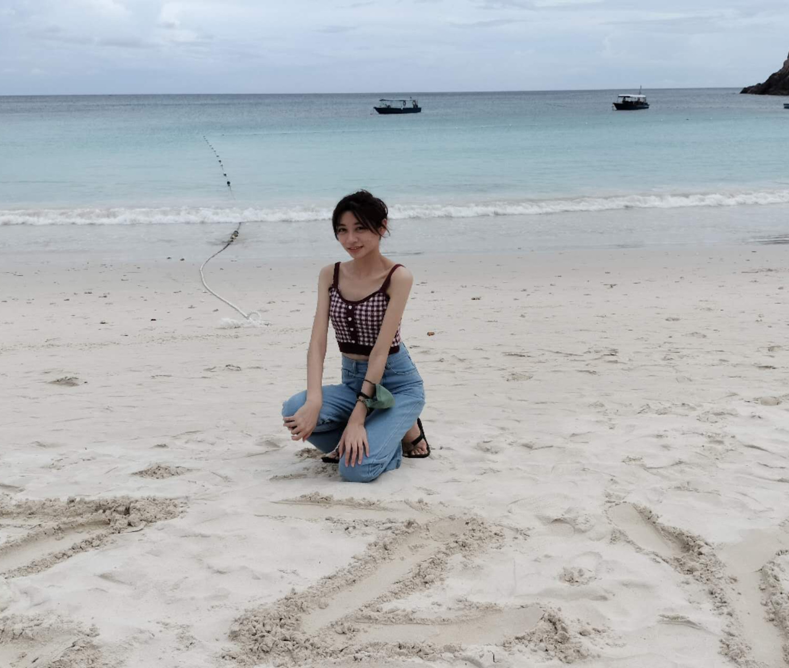

Name:
Lee Qing Fang
Student id:
1002267891
Age:
19 years
Marital Status:
Temporarily 15 husbands and 2 wives
Introduce:
A university student with a love of learning is embarking on a journey against the odds, determined to become the richest man in the world, no matter how dangerous the road ahead may be.
The Journey After Going To University
Finished SPM in 2022 and entered UCSI in September. First semester was a happy girl, second semester was no longer human. After completing my matriculation, I took Business Information Systems and was a little stressed mentally after my experience with web development, but kept my love for IT alive.
